TML
Cipango.
Identidad · Manual · Reels · Brochure · Tokio–Lima · 東京・リマ
Sistema de marca completo para una agencia de turismo en Japón hecha por y para hispanohablantes: identidad, manual, reels y brochure.
Una marca que no traduce Japón. Lo cuenta.
La mayoría de los tours «en español» en Japón los guían japoneses con un dominio aproximado del idioma. Carlos es peruano, lleva 35 años en Japón y acompaña a sus viajeros como uno más. El reto era una identidad que contara esa diferencia sin caer en el Japón de postal, y que se viera igual de bien en un reel de TikTok que en un brochure impreso.
- Humana antes que folclóricaSin geishas ni cerezos de catálogo: la marca es Carlos y su forma de mostrar el país.
- Un solo sistemaLas mismas reglas para un post, un itinerario y un video.
- Voz latina nativaEscrita en español de verdad, no traducida del japonés.
Cuatro piezas.
Una sola marca.
Cada pieza nació de una necesidad real del negocio y todas responden al mismo manual.
Identidad
Logotipo, paleta y tipografía. Humana antes que folclórica.
Ver capítulo ↓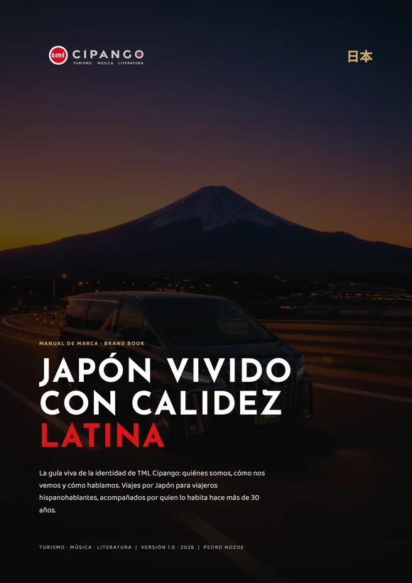
Manual de marca
31 páginas para que cualquiera aplique la marca sin preguntar.
Ver capítulo ↓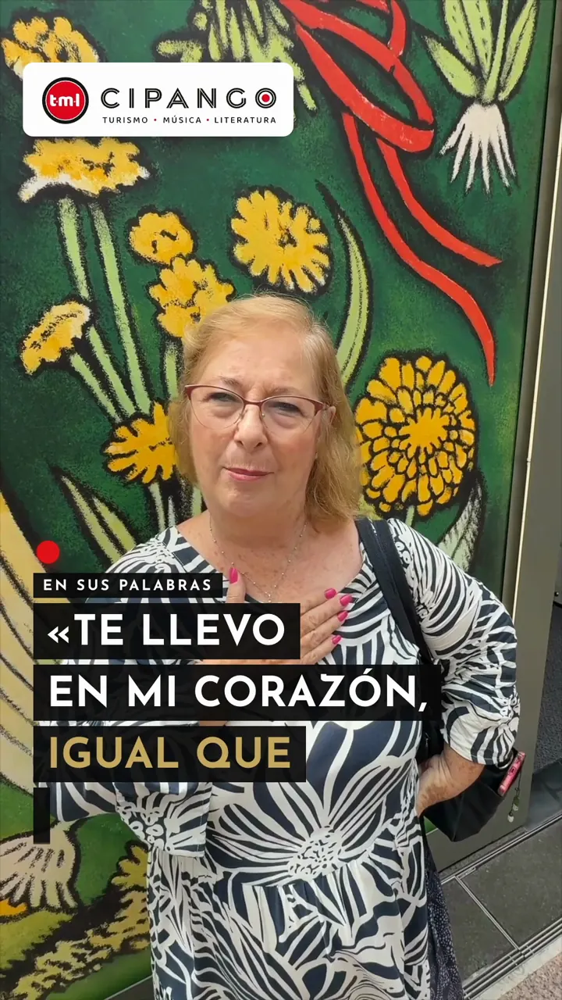
Contenido
Reels para TikTok e Instagram. El motor de crecimiento.
Ver capítulo ↓Brochure corporativo
Doce páginas que reemplazan las explicaciones por WhatsApp.
Ver capítulo ↓Un sistema,
varias piezas.
El disco rojo de tml, el logotipo CIPANGO en mayúsculas espaciadas y una regla que lo ordena todo: el rojo nunca pasa del 5 % de la superficie. De ahí salen la tarjeta, los itinerarios, los posts y la firma animada que abre y cierra cada video.
Siempre en mayúsculas, con tracking amplio.
Redondeada y cálida: el contrapunto latino.
Nombres de lugares y el sello 日本.
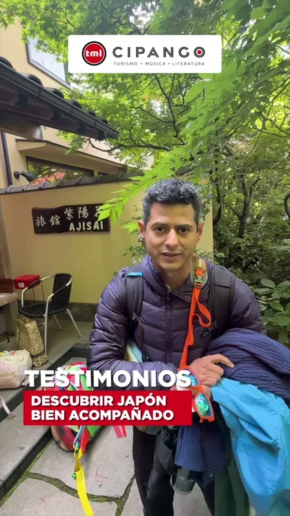
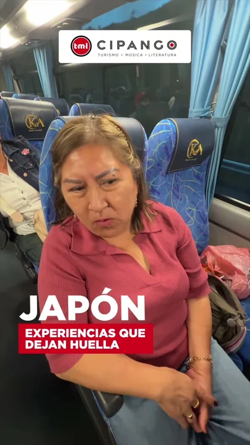
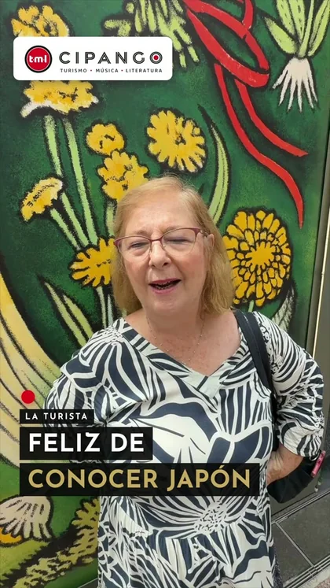
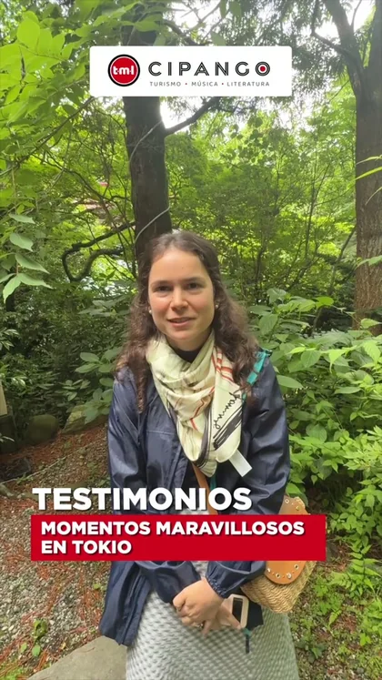
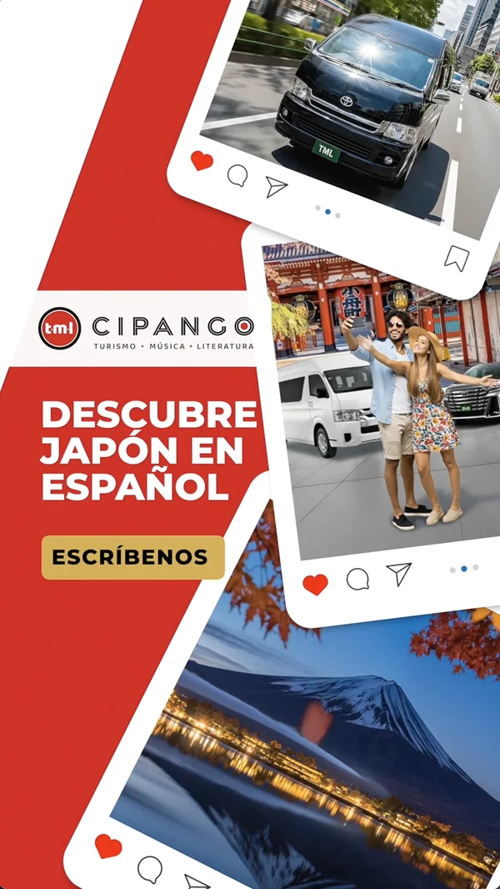
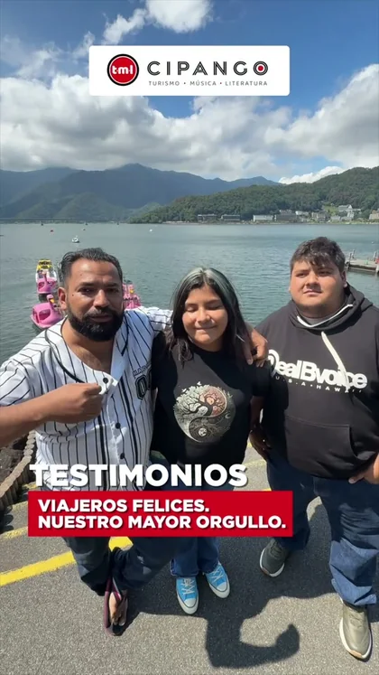
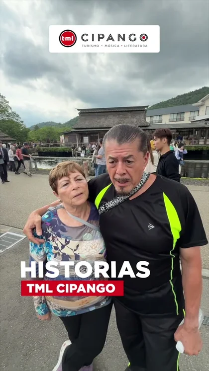
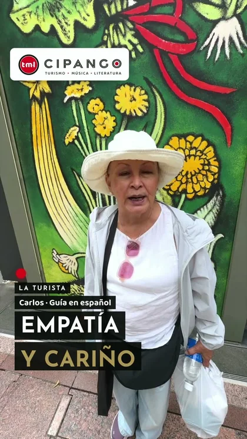
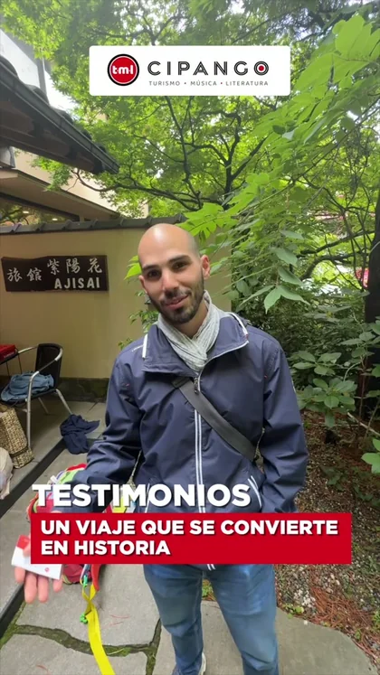
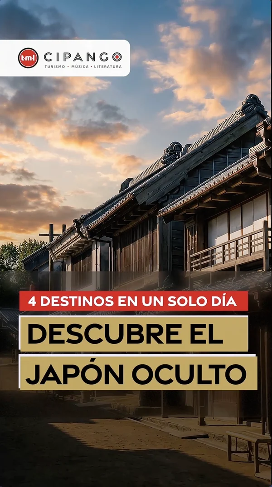
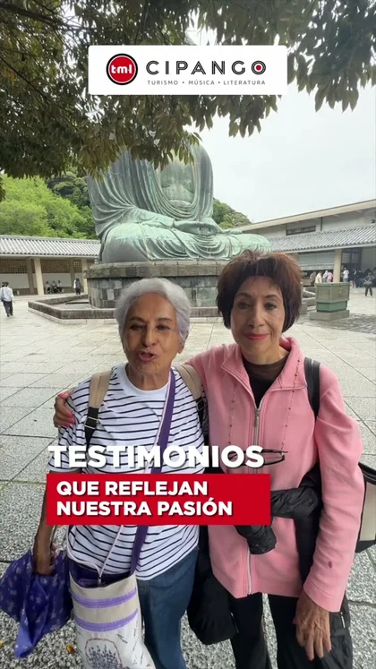
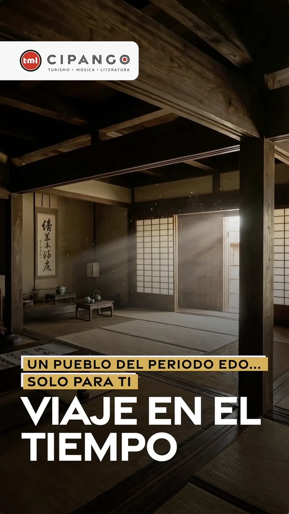
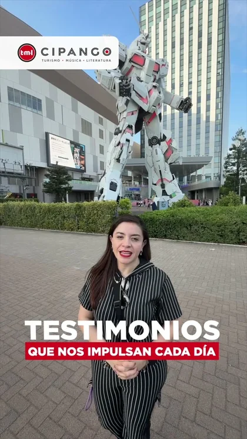
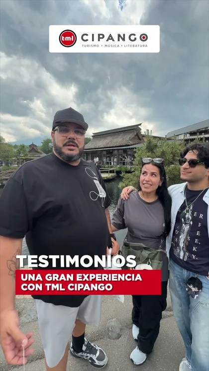
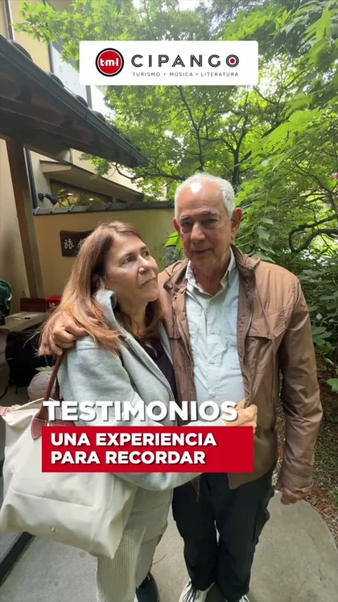
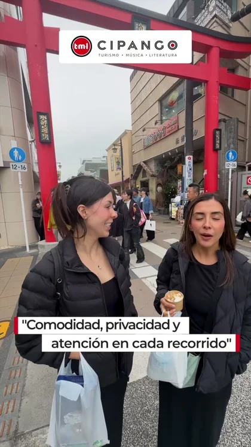
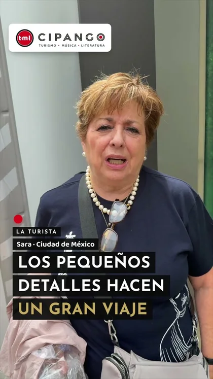
La primera impresión, en mano.
Frente con el nombre de Carlos y sus canales; reverso con las cuatro razones para elegir TML Cipango y la flota.
Cada viaje llega
en detalle, virtual
o en papel.
El itinerario a medida es la pieza que el viajero guarda: portada con su nombre, una carta de bienvenida, una página por día con la ruta, los horarios y el vehículo, y las condiciones del servicio. La misma marca que en redes, ahora como documento de viaje.
- 8 páginas A4
- Una página por día
- Hecho para cada viajero
Ejemplo: «Cuatro días en Japón», Tokio · Chiba · Kamakura
31 páginas para que la marca se sostenga sola.
El manual convierte en reglas lo que el primer año se decidió sobre la marcha: quién es TML Cipango, cómo se ve y cómo habla. Lo puede aplicar un diseñador externo, una agencia aliada o quien edita los videos, sin tener que preguntar.
- Páginas A4
- 31
- Secciones
- 24
- Capítulos
- 5
- Versión 2026
- 1.0
«Japón vivido con calidez latina.»
Manual · Esencia de marca
«El rojo nunca ocupa más del 5 % de la superficie visible.»
Manual · La regla del 5 %
«Cálida. Experta. Sensible.»
Manual · Tono de voz
Los reels que hicieron crecer la marca.
El video vertical es el motor de TML Cipango: destinos que casi no salen en las guías, testimonios de viajeros y la flota en movimiento, siempre en español y con la marca de principio a fin. Guion, edición y dirección visual de Nozoe Studio.
- Seguidores en TikTok
- +50 mil
- Seguidores en Instagram
- +6 mil
- Hasta 30 s por reel
- 9:16
Del chat
al papel.
Antes del brochure, TML Cipango se presentaba por WhatsApp, mensaje a mensaje. Ahora esa conversación cabe en doce páginas: quiénes son, qué ofrecen, la flota y los destinos que pocos conocen. Lo leen a la vez agencias de viaje de Hispanoamérica y turistas que planean su viaje.
- Páginas A4
- 12
- Vehículos
- 5
- Pasajeros máx.
- 40
- Destinos en Kanto
- 8
«Somos hispanohablantes nativos que pensamos como tú.»
Brochure corporativo · Frase de marca
- años de Carlos viviendo y trabajando en Japón
- 35
- testimonios de turistas hispanos que validan el servicio
- 100+
- seguidores en TikTok gracias a los reels
- +50mil
- piezas en una colaboración continua desde 2024
- 4
Hablemos.
30 minutos, sin compromiso. Te digo si puedo ayudarte o te recomiendo a alguien que sí.
Mi proyecto se parece al de TML.
Cuéntanos los detalles y lo aterrizamos.
De acuerdo, te llamo en 30 minutos